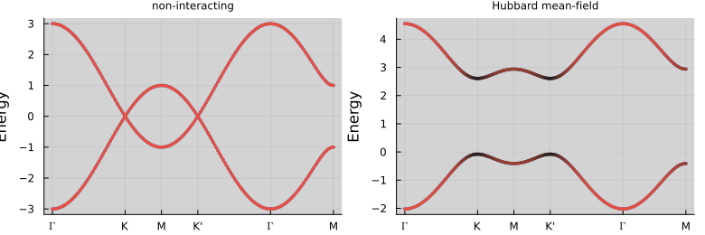
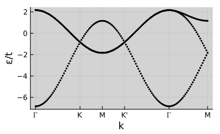

Tutorial 6 — Mean-field Self-Consistency
Notebook: extra/tutorial/Tutorial6_Meanfield.ipynb
Walk through self-consistent Hartree–Fock calculations on lattice models, capturing density and order-parameter evolution.
Learning goals
- Configure
Meanfieldproblems usingsolveselfconsistentandsolvehartreefock. - Set up initial guesses with
Meanfield.initialguessand customise convergence criteria. - Monitor observables (charge imbalance, magnetisation) during iterations.
- Persist convergence logs and final density matrices for downstream analysis.
Prerequisites
- Tutorials 1–2 for lattice and Hamiltonian construction.
- Optional: experience with the examples under
extra/examples/graphene/hubbardmeanfield_*.
Workflow outline
- Model definition — Prepare the lattice and base Hamiltonian; define the interaction channels (e.g. Hubbard U, nearest-neighbour coupling).
- Initial state — Use
initialguess(lat; mode=:random, seed=...)or reuse previous converged densities. - Solver invocation — Call
solveselfconsistent(problem; maxiter, tol, mix=...)capturing the returnedHartreeFockobject. - Diagnostics — Inspect
hf.iterations,hf.free_energy, and custom logs written to disk; plot convergence trajectories. - Post-processing — Export observables and convert density matrices using
Operators.densitymatrix.jlutilities if needed.
Live example
println("Converged: ", converged, " with residual ", error)Converged: true with residual 7.955298003421931e-6figdir = joinpath(pwd(), "figures")
mkpath(figdir)
nothingsublA, sublB = Operators.getoperator(lat, ["sublatticeAspin", "sublatticeBspin"])
mA, mB = real.(Operators.magnetization(ρ_sol, [sublA, sublB], lat))
(mA, mB)([-0.06959117596274736, 3.710059525121931e-13, -0.6680712238866557], [0.06962912262005516, -2.0564210292293056e-13, 0.668067269996227])δM = mA - mB
M = mA + mB
println("|M| = ", norm(M), " |δM| = ", norm(δM))|M| = 3.815209103520033e-5 |δM| = 1.343372013395062# Mean-field bands (use HMF.hMF, shifted by μ), coloured by sz for comparison
bands_mf = getbands(HMF.hMF, ks, sz)
bands_mf.bands .-= HMF.μ
p2 = plot(bands_mf; markersize=2, size=(380, 240), title="Hubbard mean-field")
p = plot(p1, p2; size=(780, 260), titlefont=font(8))
savefig(p, joinpath(figdir, "meanfield_bands_compare.svg"))
nothing
Triangular lattice snapshot
lat_tri = Geometries.triangular_supercell()
plot(lat_tri, size=(320, 220))base_tri = Operators.nearestneighbor!(Hops(), lat_tri)
h_tri = Utils.dense(TightBinding.addspin(base_tri, :spinhalf))
v_tri = Operators.gethubbard(lat_tri; mode=:σx, a=0.5, U=4.0)
ρ_init_tri = Meanfield.initialguess(v_tri, :random; lat=lat_tri)
ρ_tri, _, HMF_tri, converged_tri, _ = Meanfield.solvehartreefock(
h_tri, v_tri, ρ_init_tri, 0.5;
klin=16, iterations=120, tol=1e-4, show_trace=false
)
println("Triangular converged: ", converged_tri)┌ Warning: Did not convergence to requested target tolerance. Residual: 0.004554814928889068
└ @ LatticeQM.Meanfield ~/work/LatticeQM.jl/LatticeQM.jl/src/modules/Meanfield/fixedpoint.jl:127
Triangular converged: falseks_tri = kpath(lat_tri; num_points=140)
bands_tri = getbands(HMF_tri.hMF, ks_tri)
bands_tri.bands .-= HMF_tri.μ
p = plot(bands_tri; size=(360, 220), xlabel="k", ylabel="ε/t")
savefig(p, joinpath(figdir, "triangular_meanfield.svg"))
nothing
Validation checklist
- Ensure convergence thresholds are satisfied and iterations do not oscillate.
- Compare final energies against reference runs (
extra/examples/graphene). - Save density matrices to
output/and verify they can be reloaded.
Suggested extensions
- Benchmark serial vs. threaded performance and note runtime/memory settings.
- Integrate with twisted bilayer calculations (
twistedgraphene_scfexample). - Investigate superconducting order parameters by coupling to the
Superconductivitymodule.